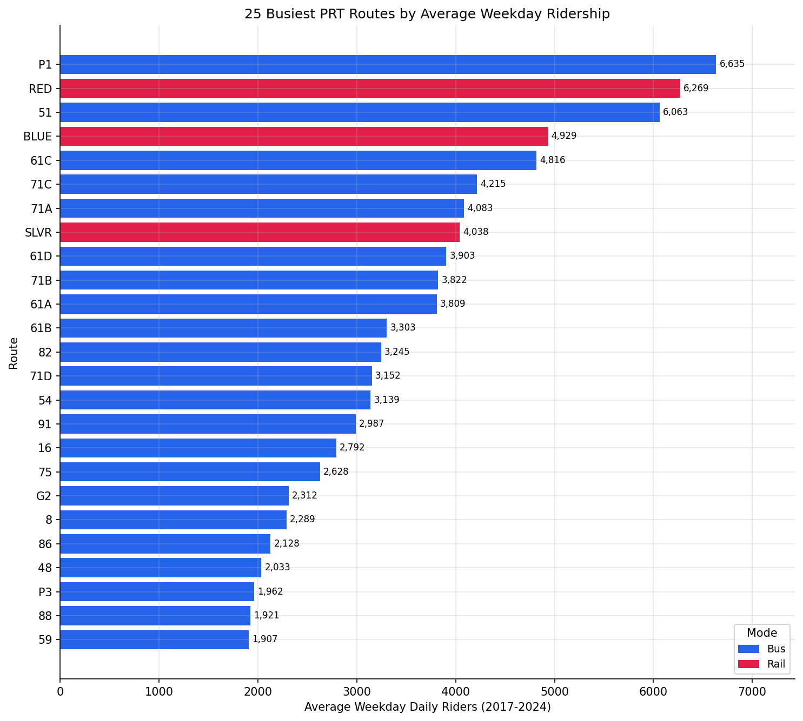
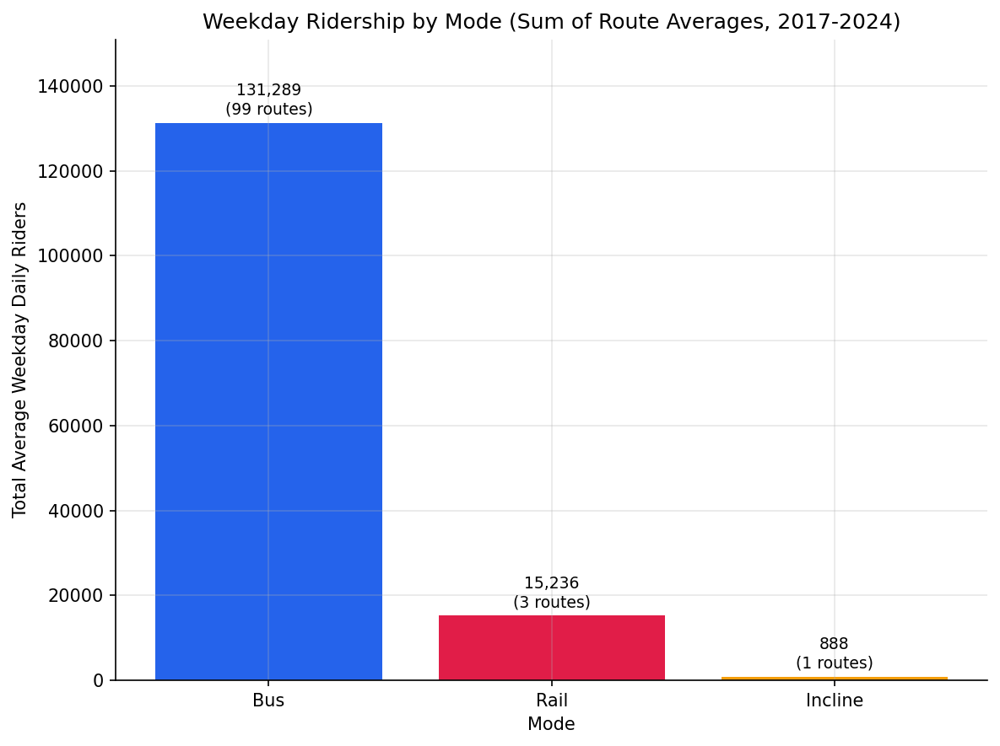

Analysis
47 - Route Ridership Ranking
Coverage: 2017-01 to 2024-10 (from ridership_monthly).
Built 2026-06-05 17:39 UTC · Commit 1196b7f
Page Navigation
Analysis Navigation
Data Provenance
flowchart LR
47_route_ridership_ranking(["47 - Route Ridership Ranking"])
t_ridership_monthly[("ridership_monthly")] --> 47_route_ridership_ranking
01_data_ingestion[["Data Ingestion"]] --> t_ridership_monthly
u1_01_data_ingestion[/"data/routes_by_month.csv"/] --> 01_data_ingestion
u2_01_data_ingestion[/"data/PRT_Current_Routes_Full_System_de0e48fcbed24ebc8b0d933e47b56682.csv"/] --> 01_data_ingestion
u3_01_data_ingestion[/"data/Transit_stops_(current)_by_route_e040ee029227468ebf9d217402a82fa9.csv"/] --> 01_data_ingestion
u4_01_data_ingestion[/"data/PRT_Stop_Reference_Lookup_Table.csv"/] --> 01_data_ingestion
u5_01_data_ingestion[/"data/average-ridership/12bb84ed-397e-435c-8d1b-8ce543108698.csv"/] --> 01_data_ingestion
d1_47_route_ridership_ranking(("polars (lib)")) --> 47_route_ridership_ranking
classDef page fill:#dbeafe,stroke:#1d4ed8,color:#1e3a8a,stroke-width:2px;
classDef table fill:#ecfeff,stroke:#0e7490,color:#164e63;
classDef dep fill:#fff7ed,stroke:#c2410c,color:#7c2d12,stroke-dasharray: 4 2;
classDef file fill:#eef2ff,stroke:#6366f1,color:#3730a3;
classDef api fill:#f0fdf4,stroke:#16a34a,color:#14532d;
classDef pipeline fill:#f5f3ff,stroke:#7c3aed,color:#4c1d95;
class 47_route_ridership_ranking page;
class t_ridership_monthly table;
class d1_47_route_ridership_ranking dep;
class u1_01_data_ingestion,u2_01_data_ingestion,u3_01_data_ingestion,u4_01_data_ingestion,u5_01_data_ingestion file;
class 01_data_ingestion pipeline;
Findings
Findings: Route Ridership Ranking
Summary
Ranked all 103 PRT routes by average weekday daily ridership over 2017-2024. The busiest route is the P1 East Busway-All Stops (6,635 weekday riders), followed by the Red Line light rail (6,269) and the 51 Carrick bus (6,063). Ridership is heavily concentrated: the top 18 routes carry half of all weekday ridership, and the top 47 carry 80%. The remaining ~55 routes share the last fifth.
Key Numbers
- 103 routes ranked; system total 147,413 average weekday daily riders.
- Top 5: P1 (6,635), RED (6,269), 51 (6,063), BLUE (4,929), 61C (4,816).
- Concentration: top 18 routes = 50% of weekday ridership; top 47 = 80%.
- By mode: Bus carries 131,289 riders across 99 routes (89%); Rail 15,236 across 3 routes (10%); the Monongahela Incline 888 across 1 route (0.6%).
- 3 routes flagged
short_history(< 12 weekday months of data).
Observations
- The single busiest route is a bus rapid transit corridor (P1 East Busway), not a rail line -- consistent with PRT's busway-centric network design.
- Three light rail lines (Red, Blue, Silver) all rank in the top 8, each carrying 4,000-6,300 weekday riders despite being only 3 of 103 routes.
- The 61x and 71x route families (Oakland/East End corridors) dominate the upper-middle of the ranking -- seven of the top 13 routes are 61- or 71-coded.
- The long tail is real: roughly half of all routes individually account for less than 1% of system weekday ridership each.
Caveats
- Two light-rail code schemes. The pre-2020 Blue Line codes
BLLB/BLSVwere excluded because the same service is recorded for the full period underBLUE/RED/SLVR. Keeping both would have double-counted rail ridership in 2017-2020. See METHODS.md. - Average spans a disrupted period. The 2017-2024 window includes the COVID ridership collapse and partial recovery, so a route's average sits below its typical pre-pandemic level and above its 2020 trough. This is a historical average, not a current snapshot.
- Routes operate for different spans. A route present for only part of the period is averaged over the months it ran. Three short-history routes are flagged; their ranks rest on a thin window.
- Ecological scope. This ranks routes, not riders or neighborhoods. A high-ridership route is not necessarily efficient -- pair with a productivity analysis (passengers per revenue hour) for that.
- Weekday-only ranking. Saturday and Sunday averages are in the CSV but do not affect rank; a weekend-heavy route may rank lower here than its total ridership would suggest.
Validation
Data inputs
- Data source verified. Columns (
route_id,month,day_type,avg_riders,route_name,mode) confirmed against theridership_monthlytable definition inbuild_db.py. No column mapping written from memory. - Temporal scope. Single table, single window (2017-01 to 2024-10). The
ranking metric is filtered to
day_type = 'WEEKDAY'consistently. - Null handling.
avg_riders IS NULLrows dropped in the query. Routes with no weekday record are dropped from the ranking (weekday_avg_ridersnot null filter). Saturday/Sunday columns may be null where a route runs no weekend service -- left as null, not zero-filled.
Results plausibility
- Aggregates sanity-checked. System total of 147k average weekday riders is plausible for a multi-year average that includes the COVID trough (PRT's pre-pandemic weekday ridership was ~200k+; the 2020-2022 collapse pulls the 2017-2024 mean well below that).
- Surprising results investigated. An initial run had
BLSV/BLLBranking 1st and 3rd as separate light-rail routes. Investigation found these are superseded pre-2020 Blue Line codes overlappingBLUE/RED/SLVR, which double-counted rail. They were excluded; the corrected ranking has P1 first. An error report was filed. - Direction of effects checked. The ranking matches known PRT high-ridership corridors -- East Busway (P1), the T lines, Carrick (51), and the Oakland 61/71 families all rank at the top, as expected.
Statistical diagnostics
- Multicollinearity. Not applicable -- no regression in this analysis.
- Small-sample routes flagged. Routes with fewer than 12 weekday months are
flagged
short_historyin the output (3 routes); none were silently dropped. - Ecological framing. Results describe route-level ridership volumes, not individual rider behavior. Noted in Caveats.
Output

Horizontal bar chart of the 25 busiest routes, coloured by mode.

Total weekday ridership by mode, annotated with route counts.
No interactive outputs declared.
Every route ranked by average weekday daily ridership, with Saturday/Sunday averages, month count, and system/cumulative share.
Preview CSV
Total weekday ridership and route count by mode.
Preview CSV
Methods
Methods: Route Ridership Ranking
Question
Which PRT routes carry the most riders? This analysis produces a single leaderboard of every route ranked by average weekday daily ridership over the full available history (January 2017 - October 2024).
Approach
- Load every route-month-daytype record from
ridership_monthly. - Restrict the ranking metric to
WEEKDAYrecords (weekday service is the largest and most comparable day type across routes). - For each route, average
avg_ridersacross all weekday months it operated. This yields the route's typical weekday daily ridership over the period. - Rank routes descending by that average. Assign an integer rank, the route's share of total system weekday ridership, and a running cumulative share so the long tail of low-ridership routes is visible.
- Count the number of weekday months observed per route (
n_months) and flag routes with fewer than 12 months of data, since their average rests on a short, possibly non-representative window. - Carry Saturday and Sunday averages as extra columns for context (not used for ranking).
- Summarise totals and route counts by mode (Bus, Rail, Light Rail, Incline).
Data
| Name | Description | Source |
|---|---|---|
ridership_monthly |
Average daily riders per route, month, and day type | prt.db table |
Filters: avg_riders IS NOT NULL. The ranking metric uses day_type = 'WEEKDAY'
only.
Five route codes are excluded. The light-rail network appears under two
overlapping code schemes: BLLB and BLSV are the pre-2020 Blue Line codes,
and the same service runs the full 2017-2024 period under BLUE, RED, and
SLVR -- keeping both would double-count rail in 2017-2020. NA, MNT, and
MNT1 are fragmentary rows with no route name. All other routes are kept;
short-history routes are flagged (short_history) rather than dropped.
Output
output/route_ridership_ranking.csv-- every route ranked, with weekday / Saturday / Sunday averages, month count, system share, and cumulative share.output/top25_ridership.png-- horizontal bar chart of the 25 busiest routes, coloured by mode.output/ridership_by_mode.png-- total weekday ridership and route count by mode.
Source Code
|
Sources
| Name | Type | Why It Matters | Owner | Freshness | Caveat |
|---|---|---|---|---|---|
| ridership_monthly | table | Primary analytical table used in this page's computations. | Produced by Data Ingestion. | Updated when the producing pipeline step is rerun. | Coverage depends on upstream source availability and ETL assumptions. |
Upstream sources (5)
|
|||||
| polars | dependency | Runtime dependency required for this page's pipeline or analysis code. | Open-source Python ecosystem maintainers. | Version pinned by project environment until dependency updates are applied. | Library updates may change behavior or defaults. |